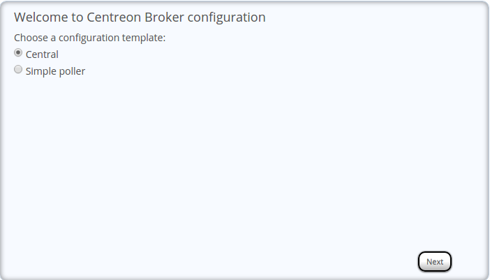

Centreon Broker configuration via wizard¶
You can create configurations of Centreon Broker via the wizard, to do this: #. Go to the menu Configuration ==> Pollers ==> Centreon-Broker ==> Configuration #. Click on Add with wizard
Two choices are available:
Configuration of central server¶

Note
Distributed monitoring schema
- Choose Central
- Enter a name for the configuration
Configuration of a poller for a distributed architecture¶
Warning
For this configuration you must have previously installed a poller.

- Choose Simple poller
- Enter a name for the configuration
- Select a poller
- Enter the IP address or the FQDN DNS name of the central server